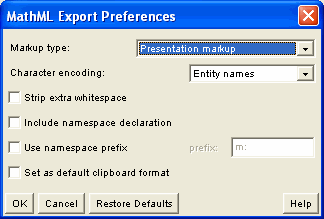

This option determines whether to generate "presentation markup" which describes how an equation looks, or "content markup" which describes what an equation means. Both styles of markup are valid MathML. See Generating Content Markup for a full discussion of the strengths and weaknesses of each style of markup.
You also have the option of generating "normalized presentation markup" which is the default. When this option is chosen, WebEQ Editor will try to optimize the generated markup by eliminating redundant tags, or inserting extra structure to improve interoperability with other MathML software.
XML in general, and MathML in particular, permits several different ways of representing non-ASCII characters, such as most mathematical symbols. This option determines whether these symbol characters will appear as named entities in the MathML markup (α), as numerical entities (α) or as UTF-8 encoded Unicode characters (α -- this may appear as a missing character glyph if you don't have fonts with an alpha installed).
In general, UTF-8 is preferred in the XML world, but it can lead to interoperability problems with some tools. Named entities are best for readability, but they frequently cause problems in XML tools since a DTD must be available to process them. Consequently, numerical entities are generally the safest choice.